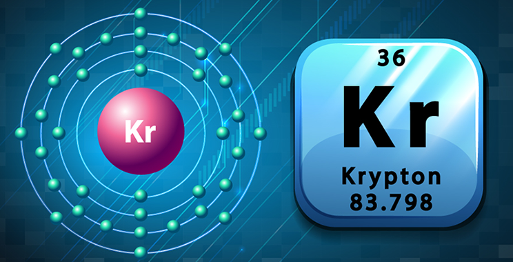
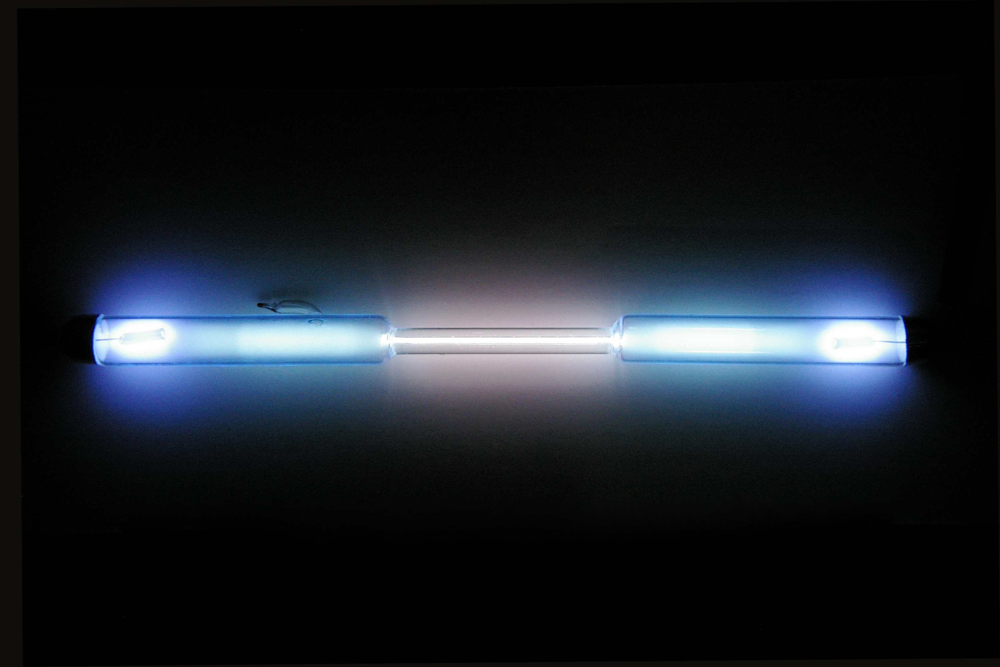
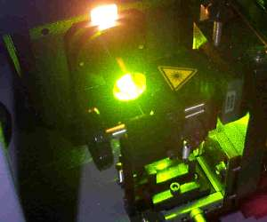
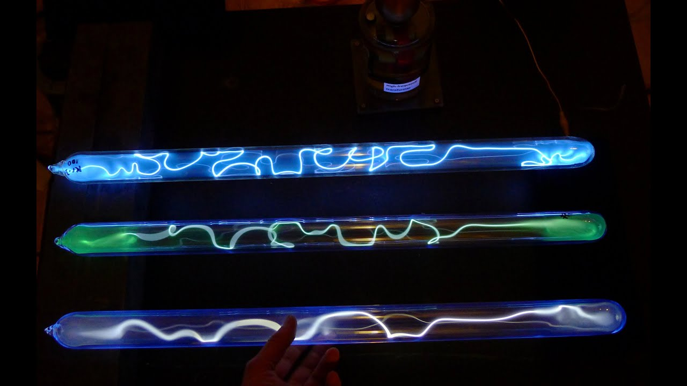

The element on the periodic table that im going to be talking about is called krypton. Krypton comes from a greek word "kryptos" which mean the "hidden one" . Krypton is a noble gas, its atomic number is 36, symbol is Kr and its atomic weight is 83.798 as you can see in the picture below.
figure 1. A picture of kryptons symbol and atomic number.
krypton is a gas and a nonmetal substance which is colourless, scentless, tasteless ,and can't physicaly touch. Its boiling point is 153.22 degrees and melting point is 157.36.
Krypton is one of the three found in noble gases found in London. William Ramsey a scottish scientist and Moris Travers a english chemist found Krypton in london May 39th 1898, which was actually the 3rd noble gas that William Ramsay found after helium and argon. they actally discovered krypton by accident when they were studying about liquefied air. Later on sir William Ramasy won a noble prize in chemistry for finding many noble gases including Krypton.
What was the money called on Superman's home planet?
Kryptoncurrency.
Commercially Krypton is utilised as a filler gas for energy-saving fluorescent lighting. It's also found in some high-speed photography flash bulbs. It is more reactive than the lighter gases in its group, allowing it to form chemical compounds.
Figure 2. this is a picture of a light made with Krypton

Figure 3. This is a Plasma ball that contains Krypton
Figure 4. This a picture of photography flash made from Krypton.
Figure 5. This is a picture of colourful fluorescent lights made from Krypton and Argon.

Figure 6.This is a pictureof a mri machine which uses Krypton in it.
A bizarre fact is Krypton is one of the rarest gases on the planet, accounting for only 1 part per million by volume of the atmosphere.